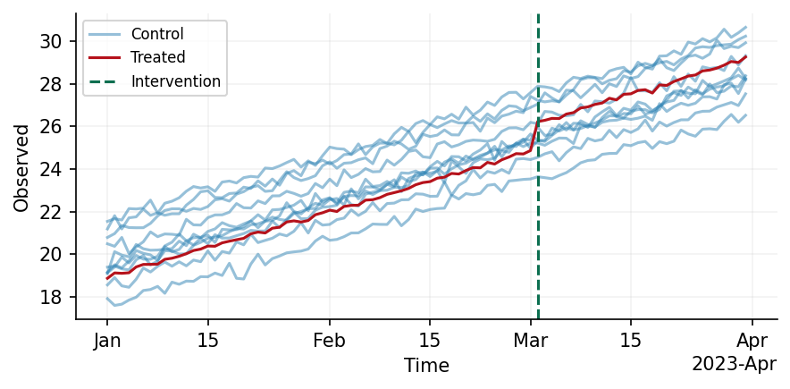

Welcome to Causal Validation
Causal Validation is a library designed to validate and test your causal models. To achieve this, we provide functionality to simulate causal data, and vaildate your model through a placebo test.
Data Synthesis
Data Synthesis in Causal Validation is a fully composable process whereby a set of functions are sequentially applied to a dataset. At some point in this process we also induce a treatment effect. Any of these functions can be parameterised to either have constant parameter values across all control units, or a value that varies across parameters. To see this, consider the below example where we simulate a dataset whose trend varies across each of the 10 control units.
from causal_validation import Config, simulate
from causal_validation.effects import StaticEffect
from causal_validation.plotters import plot
from causal_validation.transforms import Trend
from causal_validation.transforms.parameter import UnitVaryingParameter
import numpy as np
from scipy.stats import norm
# Treatment assignment matrix
D = np.zeros((90, 11)) # 90 time points, 11 units
D[60:, -1] = 1 # Last unit treated after 60 time points
cfg = Config(treatment_assignments=D)
# Simulate the base observation
base_data = simulate(cfg)
# Apply a linear trend with unit-varying intercept
intercept = UnitVaryingParameter(sampling_dist = norm(0, 1))
trend_component = Trend(degree=1, coefficient=0.1, intercept=intercept)
trended_data = trend_component(base_data)
# Simulate a 5% lift in the treated unit's post-intervention data
effect = StaticEffect(0.05)
inflated_data = effect(trended_data)
plot(inflated_data)

Model Validation
Once a dataset has been synthesised, we may wish to validate our model using a placebo test. In Causal Validation this is straightforward and can be accomplished in combination with AZCausal by the following.